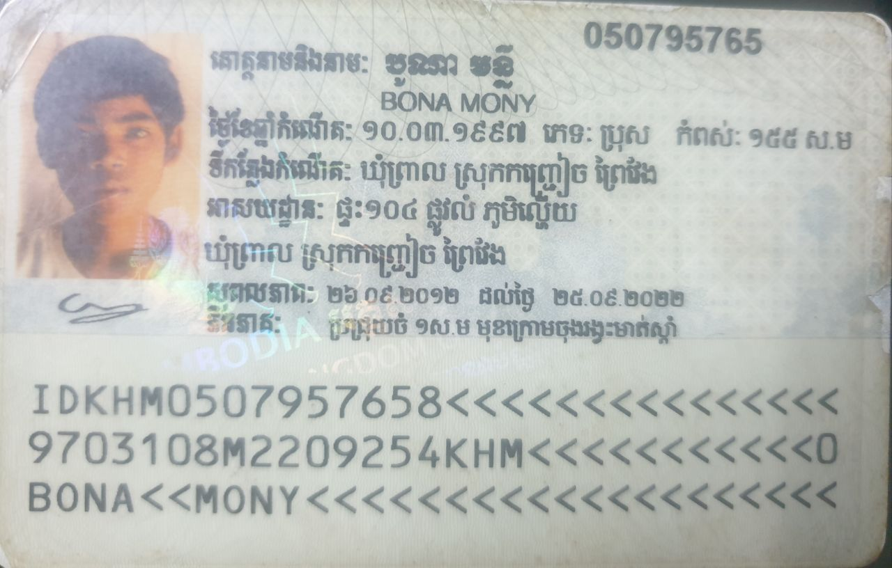

KINGDOM OF CAMBODIA
NATION RELIGION KING
Full name: BONA MONY
Address : Village 7, Sangkat Mittapheap, Khan 7 Makara, Phnom Penh.
Contact : +(855) 88 465 5699
Email : monybonait@gmail.com
Apply for : Supervisor, MIS and Report Development.
Dear
I am very pleased, when I heard your announcement. So, I am particularly interested and I am very glad because of what you acquire is what I want to do. Moreover, in your Company is a right career for me. I’m studded of Computer Science at Royal University of Phnom Penh and highly experienced at banking and financial industry 3 years with skilled Management Information System and Core Banking System. Adept at working independently or as part of a team. Able to adapt to evolving staff needs and changing deadlines. So, like this I want develop my skill to have good ability for working and sharing my knowledge. I am good at providing advice and service information, resolves service problems, communicating, hard-working, responsible, patient, honest, punctual, well-organized, good behavior, and creative. Furthermore, I can work well in a team and I have enough ability to work in this position efficiently.
According to my education and experiences below, I believe in my ability to participate with your company in order to improve. All of these experiences, I am strong expectation and to be confident in my capacity that you will allow to me to work at your company. One more thing, I will decide to try my best to work hard, come regularly, and to purify honestly.
I hope you will give your consideration to my application. Thank you for your consideration and spend time to check my enclosed CV. so I am looking forward to hearing from you soon.
Thank You!
Sincerely Yours,
Bona Mony
CURRICULUM VITAE
|
Full name: Bona Mony
Address : Village 7, Sangkat Mittapheap, Khan 7 Makara, Phnom Penh.
Contact : +(855) 88 456 5699
Email : monybonait@gmail.com
|
|
 |
PERSONAL PROFILE
date of birth : 03 March 1997
Place of birth: Lahery Village, Preal Communce, Kannh Chreach District, Prey Veng Province.
Nationality : CAMBODIA
Marital Status: Sigle
Sex : Male
Health : good
KEY QUALIFICATION
- - Confidence
- - Communication Skill
- - Positive Attitube, Hosetly and Friendly
- - Hardworking and commitment
- - Flexible and Willing to learn new skill
EDUCATION
2017 - 2021 : Complete Bachelor Degree of Computer Science of RUPP.
2013 - 2016 : Complete Pras Bat Noromdom Hight School.
WORK EXPERIENCES
02/2019 - 08/2019 : Work at HONDA CHEUNG SONGHY of position Data Entry
- - Entering customer and acount data from source documents within time limits.
- - Compiling, verifying accuracy and sorting information to prepare source data for computer entry.
- - Reviewing data for deficiencies or errors, correcting any incompatibilities and check out.
11/2019 - 11/2020 : Work at TriCube-Banking System of position System Support
- - Manage the relevant risk with system.
- - Ensure the core banking System to be up and support the bank with business requirements.
- - Support core banking system upgrade, testing and fixing.
- - Provide system training and support to relevant users when needed.
12/2020 - 03/2022: work at FASMEC Microfinance of position Senior MIS Office
04/2022 - NOW: work at FASMEC Microfinance of position Deputy IT Manager
- - Ensure the core banking system to be up and support the bank business requirements.
- - Improve system by studying current practices, designing modifications and new parameters set up.
- - Planing for branch opening both system and network infra-structure.
- - Manages the relevant risk with system network security attack.
- - Handles all kinds of core banking system troubleshooting.
- - Coordinate with software vendor to resovle problems caused by users, hardware software and report.
- - Identify the root cause of the problem and apply the appropriate resolution.
- - Support system upgrade, testing and fixing.
- - Support user's requirements in the provision of information for regulatory reporting.
- - Support core banking system configuration, parameterization and function test.
- - Support user problems for any issue with core banking system and networking.
- - Providing training/ support/ consolation/ with IT support for system and network issue.
- - Prepare guideline or manual after system testing and new in house completed.
- - Develop new software applications in house for all department's requirements with business analyst.
- - Manage and maintains Firewall Server.
- - Manage and support branch work.
- - Maintain existing policies and procedure to ensure accuracy of IT Department practices
COMPUTER SKILL
Microsoft Office : Word, Excel,Access, Outlook.
Networking : Client-Server Network (Window)
Database : SQL Server, Builder Report SQL, Oracle, BI Report Oracle
Internet Email
LANGUAGES
Khmer : Mother Tongue.
English : Reading, Writing, Speaking and Listening (Medium).
HOBBY
I like resolve other problems that related to IT skill and programming skill, reading document relate with social and generate news in English and Khmer, Research Internet....